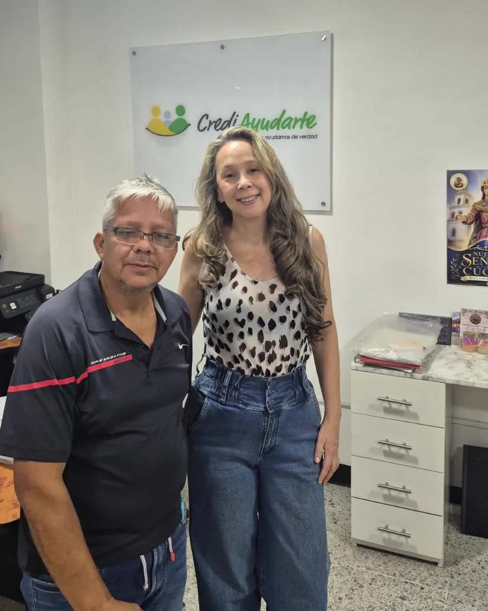
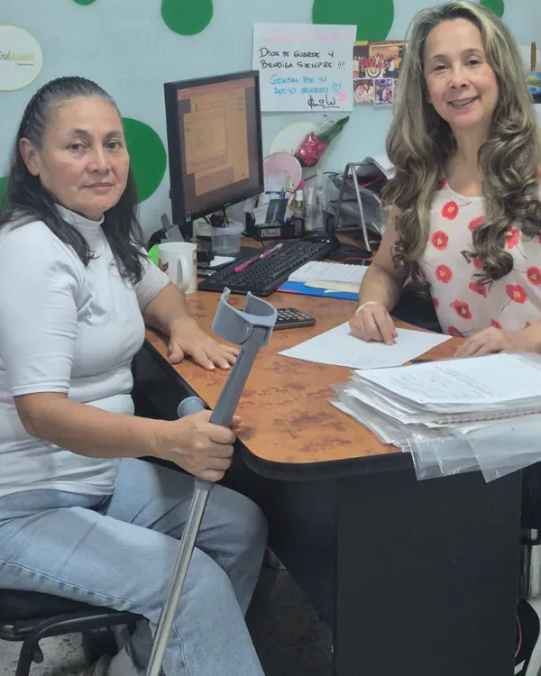

Pensionados
Colpensiones, FOPEP, Fiduprevisora, CASUR, CREMIL y otras pagadurías.
Asesoría en créditos de libranza· Oficina en Cúcuta
Si eres pensionado o empleado del gobierno, te hacemos tu preanálisis sin importar tu reporte. Buscamos las mejores opciones para ti y tú decides cuál eliges.
Nuestro asistente virtual te atenderá de inmediato, te ayudará con el preanálisis y responderá tus dudas.

Antes de escribirnos
Un crédito de libranza es un préstamo cuya cuota se descuenta directamente de tu pensión o de tu sueldo. Nosotros te asesoramos; el dinero lo presta y lo aprueba una entidad financiera.
Por eso nadie serio puede garantizarte un crédito, ni siquiera si eres pensionado o tienes nómina pública.
El límite de la mitad del ingreso neto está en el artículo 3 de la Ley 1527 de 2012 (Función Pública). Lee cómo funciona el crédito de libranza paso a paso.
¿A quién podemos ayudar?
Si tu pensión o tu salario los paga una entidad pública, el crédito por libranza descuenta la cuota directamente de tu pago. Elige tu perfil para ver qué se revisa en tu caso, o escríbenos directo.
Colpensiones, FOPEP, Fiduprevisora, CASUR, CREMIL y otras pagadurías.
Alcaldías, gobernaciones, ministerios, Rama Judicial, DIAN, ICBF y otras entidades.
Vinculados a Secretarías de Educación municipales, distritales y departamentales.
Policía, Ejército, Armada y Fuerza Aérea, en actividad o pensionados.
¿Trabajas en una empresa privada o eres independiente? Nuestro foco es el sector público; si es tu caso, te lo decimos de entrada para que no pierdas tiempo.
¿Qué necesitas hacer?
Para libre inversión, un arreglo, una deuda familiar o lo que necesites. Revisamos qué entidades trabajan con tu pagaduría y comparamos cuota, plazo y costo total.
¿Qué papeles te van a pedir? Mira qué documentos piden para un crédito de libranza.
Eso se llama compra de cartera: un crédito nuevo paga los que tienes y te deja una sola cuota. Te mostramos si de verdad te conviene, porque una cuota más baja a veces significa pagar más años.
Si te queda capacidad de pago, buscamos entidades que puedan estudiar tu perfil, incluidas cooperativas. Depende de tu pagaduría y del tipo de reporte o embargo. Estar reportado no cierra todas las puertas, pero tampoco hay aprobación asegurada.
Cuando los descuentos ya no dejan espacio, a veces se pueden ordenar primero las deudas con una financiación externa y después estudiar una libranza. Tiene costos propios y no garantiza el crédito: te lo explicamos antes.
Cada caso depende de tu pagaduría, de tu capacidad de pago y de las políticas de cada entidad. No prometemos una solución para todos: te decimos con claridad si vemos una opción viable y, si no te conviene, también te lo decimos.
¿Por qué hablar con nosotros?
CrediAyudarte presta asesoría e intermediación en créditos de libranza. No somos un banco ni una cooperativa: buscamos entidades que puedan estudiar tu caso y revisamos contigo si el crédito te conviene antes de que firmes.
¿Quién está detrás? CrediAyudarte es el nombre comercial de Marilú Arévalo Toro, con oficina en el Centro Comercial Internacional de Cúcuta. Cuando escribes al WhatsApp 315 247 4348, nuestro asistente virtual te atiende de inmediato y el equipo de la oficina te acompaña con tu caso.
Si quieres conocernos mejor, lee quiénes somos o visítanos en la oficina de Cúcuta.
La Superintendencia Financiera explica cómo reconocer a los falsos prestamistas. Lee también qué hacer si te piden un anticipo.
Testimonios reales
Pensionados y empleados del Gobierno de Cúcuta y de Norte de Santander que tramitaron su crédito de libranza con nosotros. Fotos y videos tomados en nuestra oficina, con su permiso.
Nuestra oficina Calle 12 # 4–47, Local 4 · C.C. Internacional, Cúcuta
Ver testimonios en fotos y video
Cómo funciona
Con una solicitud corta que llega a nuestro WhatsApp: tu nombre, tu edad, si eres pensionado o empleado del gobierno y cómo está tu reporte.
Sin documentos en este pasoMiramos tus descuentos y buscamos entidades que puedan estudiar tu caso. Si hace falta, te pedimos tu desprendible de pago.
Preanálisis sin costoSi hay una opción viable, te mostramos cuota, plazo y costo total, y te acompañamos en el trámite. La entidad aprueba y desembolsa.
Sin presión para firmarPreguntas frecuentes
No. El preanálisis no tiene costo ni compromiso. Si más adelante una gestión tiene honorarios, o si tu caso necesita una financiación externa con costos propios, te lo explicamos por escrito antes de que decidas avanzar.
No. No pedimos anticipos, seguros anticipados ni pagos para «liberar» un desembolso. Si alguien te pide dinero por adelantado en nombre de CrediAyudarte, no pagues y escríbenos a nuestro WhatsApp oficial, 315 247 4348.
La entidad que presta el dinero: un banco, una cooperativa u otra entidad autorizada. CrediAyudarte no es un banco ni presta dinero propio. Revisamos tu caso, buscamos entidades que trabajen con tu pagaduría y te acompañamos en el trámite. La aprobación, las condiciones y el desembolso dependen de la entidad.
Depende de tu pagaduría, de la capacidad de pago que te quede, del tipo de reporte y de las políticas de cada entidad. Si tienes capacidad, buscamos entidades, incluidas cooperativas, que puedan estudiar tu perfil. Si no te queda cupo, podemos estudiar un saneamiento previo. No prometemos un resultado.
Algunos casos con embargo pueden estudiarse. Influyen el tipo de embargo, la pagaduría, la capacidad que quede y las políticas de cada entidad; los de alimentos o familia suelen tener más restricciones. Pagar la deuda no levanta el embargo de forma automática. Lo revisamos sin prometer resultado.
Sí, es una de las consultas más comunes. Revisamos cuánto te descuentan hoy y qué margen te queda: por ley, después de los descuentos de libranza debes recibir por lo menos la mitad de tu salario o pensión neta (Ley 1527 de 2012). Si tienes varios créditos, también miramos si una compra de cartera podría ordenar tus cuotas. Si no te conviene, te lo decimos.
Para la primera consulta, ninguno: basta con contarnos tu perfil, tu pagaduría y lo que necesitas. Si tu caso tiene opciones, te pediremos por WhatsApp tu desprendible de pago más reciente y, más adelante, los documentos que pida la entidad, como tu cédula. No te pedimos claves ni contraseñas.
No es obligatorio. La mayor parte de la atención es por WhatsApp. Si estás en Cúcuta y lo prefieres, coordinamos una cita en nuestra oficina: Calle 12 # 4-47, Local 4, Centro Comercial Internacional.
Tenemos oficina en Cúcuta y atendemos a todo el país de forma virtual por WhatsApp. Si estás en otra ciudad, te atendemos virtualmente.
Es un crédito cuya cuota se descuenta directamente de tu nómina o de tu pensión. Suele tener condiciones más ordenadas, pero igual conviene revisar el plazo, el costo total y los descuentos antes de decidir.
Nuestro foco son pensionados y empleados públicos con pagaduría. No ofrecemos préstamos generales a independientes con reportes. Si es tu caso, te lo decimos de entrada para que no pierdas tiempo.
Depende de la entidad, de tu pagaduría, de los documentos y de las validaciones. Por eso no prometemos tiempos. Te contamos de forma realista en qué va tu caso.
Pedimos solo lo indispensable y lo usamos para orientar tu caso. Para estudiarlo con una entidad o un financiador es necesario compartir tu información con ellos, y eso lo hacemos solo con tu autorización. No vendemos datos. Los detalles están en nuestra política de privacidad.
¿Tienes más dudas? Lee las guías de crédito para pensionados, empleados públicos, docentes, Policía, Ejército y Fuerza Pública, crédito para reportados, crédito con embargo, compra de cartera y crédito de libranza en Cúcuta, o el blog Decisiones claras.
Escríbenos y revisamos tu caso. Nuestro asistente virtual te atiende de inmediato y te decimos con claridad si vemos una opción viable. Revisar tu caso no cuesta.
WhatsApp 315 247 4348 · Calle 12 # 4–47, Local 4, C.C. Internacional, Cúcuta